Paperclip Triage — workbench wireframes
Low-fi black-and-white wireframes for the eight surfaces in the approved triage plan. The centerpiece is a two-column item workbench: assistant chat on the center/left, item document and properties on the right. Direct edits and chat-assisted edits target the same item content. Reflection sits over the workbench whenever a transition requires it.
All component references in red callouts are real Paperclip primitives (file:line in the reuse key). Where the spec asks for something new — variable palette, diff renderer — it's flagged as a system change.
Flow
The main triage loop is the top row (solid arrows). Configuration paths are dashed. The item workbench is the only screen with a bold border — it's the centerpiece. Ingest API is the only entry point for items in v1; there are no source connectors.
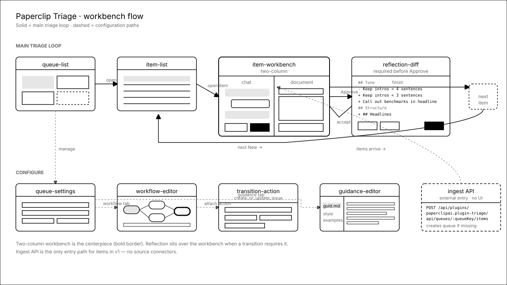
What we borrow from Paperclip core
The plugin SDK and Paperclip core already ship most of what the workbench needs. New surfaces (chat composer pinned to an item, guidance diff renderer, transition-action variable palette) are explicit additions and are called out per-screen.
packages/plugins/sdk/src/ui/components.ts:516components.ts:509components.ts:586components.ts:591components.ts:581ui/src/components/IssueChatThread.tsx:1packages/plugins/sdk/src/ui/hooks.ts:43hooks.ts:139packages/plugins/plugin-llm-wiki/src/manifest.ts:574 and src/ui/app.tsx:1589 / 2405ui/src/components/ui/1.Queue list
Plugin home. Route sidebar shows queues with state counts and plugin-level links (settings, reconcile, managed agent). Main area is a queue card grid: each card shows state counts as chips, the configured assistant agent, action summary, and an "open workbench" CTA. The "+ create" tile reminds the reader that an unknown queueKey from the ingest API auto-creates the queue with default workflow + guidance.md.
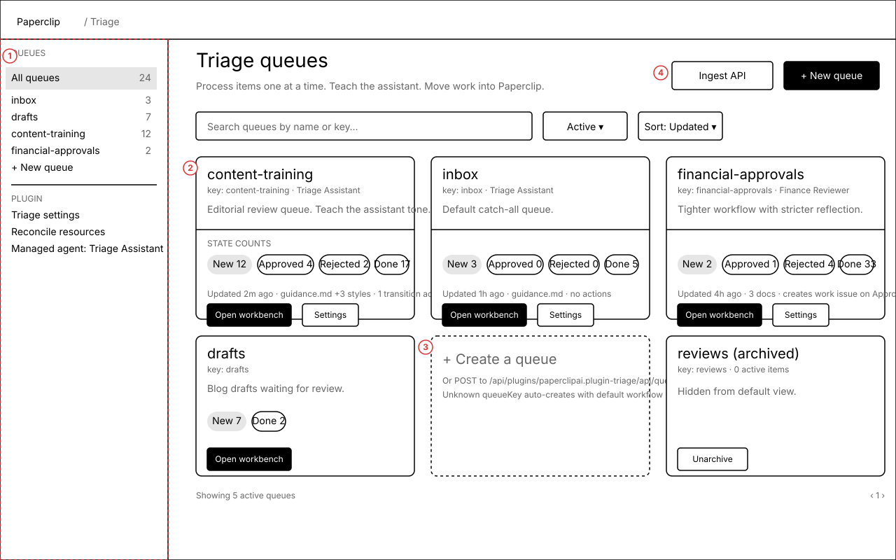
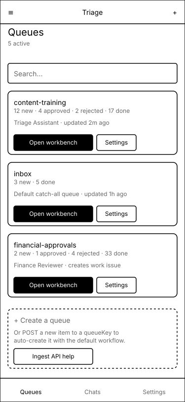
Annotations
- 1 — Route sidebar mirrors the LLM Wiki
routeSidebarslot. Queues appear under QUEUES with state-count badges; plugin links sit under PLUGIN. - 2 — State count chips are
Badgeprimitives with the active state filled. Counts read live viausePluginData("queues:listWithCounts"). - 3 — A dashed create-queue tile educates users that the ingest API creates queues by default — no need to come here first.
- 4 — Archived queues stay listed but de-emphasised; unarchive without navigation.
- Mobile — Cards collapse to a single vertical stack; chip row becomes one compact summary line. Bottom tab nav (Queues · Chats · Settings) replaces the sidebar.
Card, Badge, Button, Input from ui/src/components/ui/; route sidebar pattern from plugin-llm-wiki.2.Item list
Items in one queue, grouped by workflow state. The "Start triage (next New)" CTA opens the oldest New item directly in the workbench — keeping the loop friction-free. Each row surfaces title, opaque properties summary, itemKey, age, and any linked work issue.
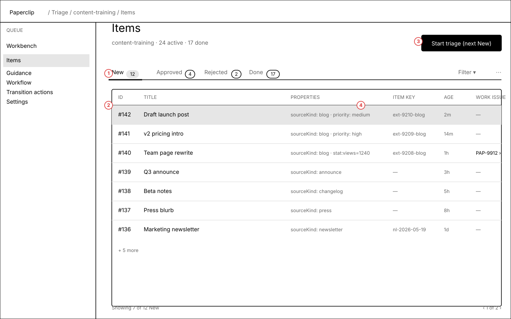
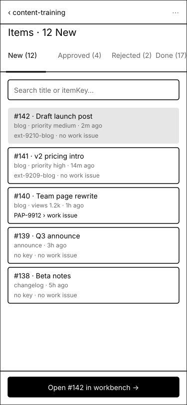
Annotations
- 1 — State tabs are driven by the queue workflow definition. Counts live-update from the worker.
- 2 — Row is a list-row primitive; clicking opens the item workbench. Properties shown as a free-form, opaque summary (sourceKind, priority, stats).
- 3 — Primary CTA always opens the next actionable item. Keeps the triage loop fast.
- 4 — Linked work issue, when present, links into Paperclip's regular issue view via
useHostNavigation. - Mobile — Rows become full-width cards; state tabs scroll horizontally. The "open #142 in workbench" CTA is sticky at the bottom.
Tabs, Badge, Table-style list row; IssuesList for the linked-work-issue column on the right.3.Item workbench — two columns, locked
The approved two-column work area: assistant chat on the center/left, item document and properties on the right. Both columns target the same item content — edits made directly in the markdown editor and edits made through a chat tool call are equivalent. Allowed transitions sit in the workbench bar; the route sidebar holds queue/item nav so the two columns stay the mental model.
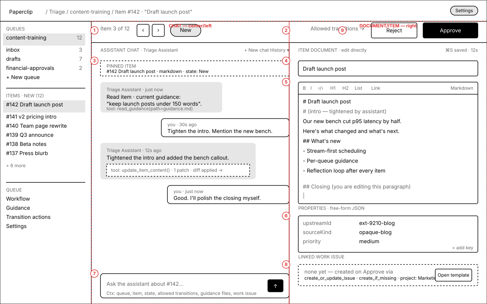
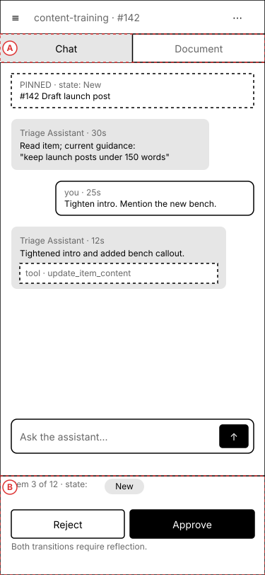
Annotations
- 1 · chat column —
IssueChatThread, rendered against the queue's hidden chat issue, with assistant tool-call bubbles slimmed down (no comment toolbar, no reactions). Chat history dropdown + "new chat" pin to the column header. - 2 · document column — Title input +
MarkdownEditor+propertieseditor + linked-work-issue card. This is the "edit directly" path. - 3 · pinned item card — Always visible in the chat. Pins the current item into assistant context (queue, item, state, allowed transitions, guidance files) — see composer footer for the full context strip.
- 4 — Title is editable inline.
- 5 · chat-assisted edit — Same content, different path. The assistant's
update_item_contenttool call produces a small diff card inside the chat bubble; the right-column editor updates in place. Saves count for reflection just like manual edits. - 6 · free-form properties — Key/value editor. No schema enforcement in v1; the contract is explicit about that.
- 7 · composer — Single-line composer with shift+enter for multi-line. Footer surfaces the full assistant context so the user trusts the agent's view of the world.
- 8 · linked work issue card — Dashed when none exists, with a preview of what the configured transition action will do.
- 9 · transition controls — Allowed transitions only, rendered as
Buttons in the workbench bar. Disabled with a tooltip when reflection is required and not yet resolved. - Mobile — The two columns become a top tab switch (Chat / Document). State strip + transitions become a sticky bottom action bar. The pinned-item card stays visible above the chat. Sheet/drawer (
Sheet) holds route navigation.
IssueChatThread (slim variant), MarkdownEditor, Tabs, Button, Sheet for mobile drawer, Badge for state pill, ScrollArea for both columns.IssueChatThread that suppresses comment toolbar / reactions and renders tool-call bubbles compactly. Proposed as a prop on the existing component, not a fork.4.Reflection diff
Sits over the workbench when a transition requires reflection (default: new.approve and new.reject). The assistant compares the original item, edits, chat, and current guidance, then proposes a diff to one or more guidance documents. The user accepts, rejects, edits inline, or asks for a revision. Acceptance bumps the doc revision and unblocks the transition.
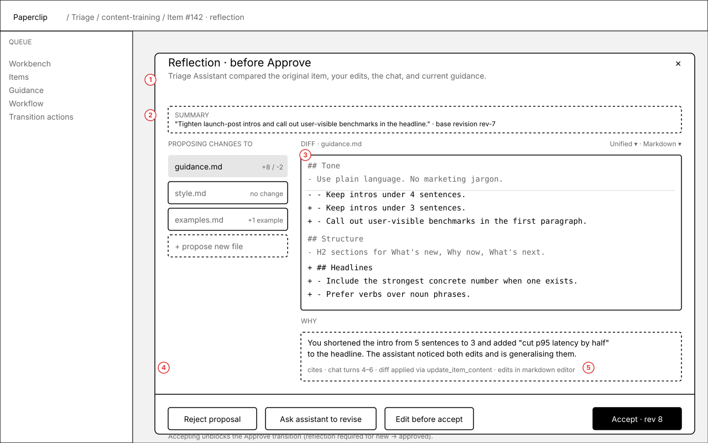
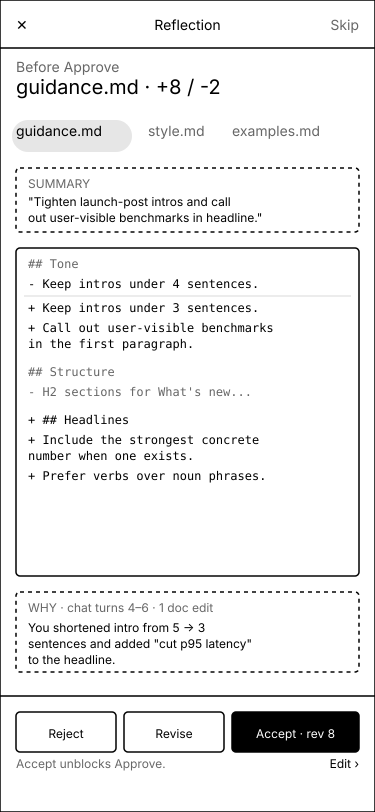
Annotations
- 1 · summary — The assistant's one-line take on what changed. Citable.
- 2 · doc selector — Folder-style list of guidance docs with change counts; "+ propose new file" supports growth beyond
guidance.md. - 3 · diff body — Unified diff in markdown. Inline edit converts the panel into a
MarkdownEditorover the proposed body. - 4 · revise / reject / edit — All three soft paths. Revise sends a chat turn ("revise because…"); reject keeps the proposal in history for audit.
- 5 · accept — Creates a new guidance revision and unblocks the transition. Status note explains the linkage so the user understands why this is required.
- Mobile — Reflection becomes a full-screen sheet. Doc selector becomes scrollable tab chips. Actions sit in a sticky bottom bar with an "Edit ›" link to drop into the editor on a separate screen.
Dialog for the desktop overlay; Sheet for mobile; MarkdownBlock + custom diff renderer for the body.requiresReflection a hard gate. Surfacing this as an overlay (not a separate screen) keeps the user in their item's context.5.Guidance editor
Queue guidance lives as a folder of plugin documents, not one oversized blob. Every queue starts with guidance.md; more files (style.md, examples.md, rubric.md) can be added as the queue's voice matures. Pending reflection proposals surface in the file tree so the user can see "this doc has open work" without jumping through the chat.
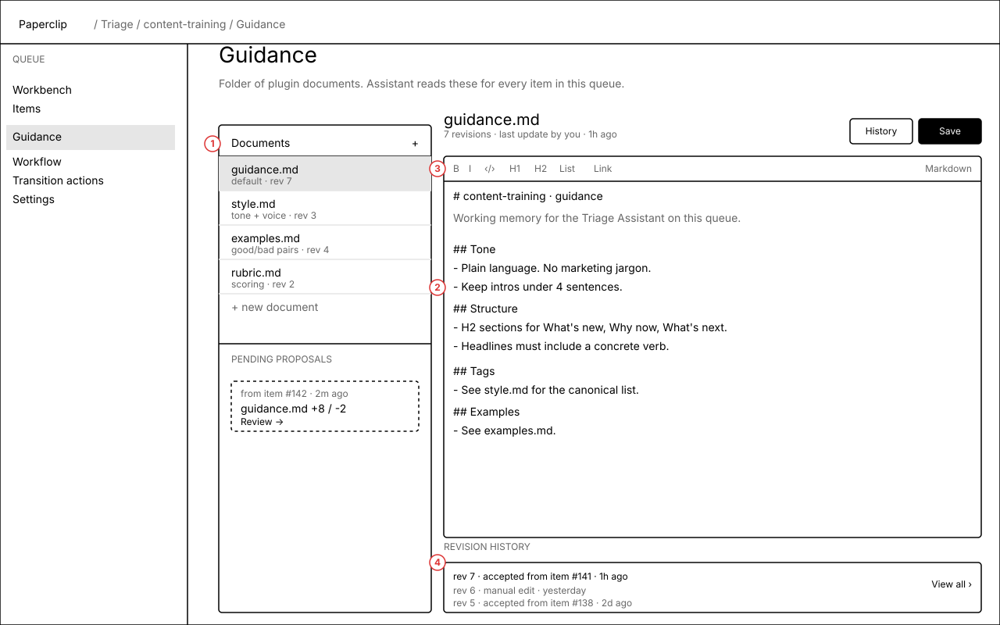
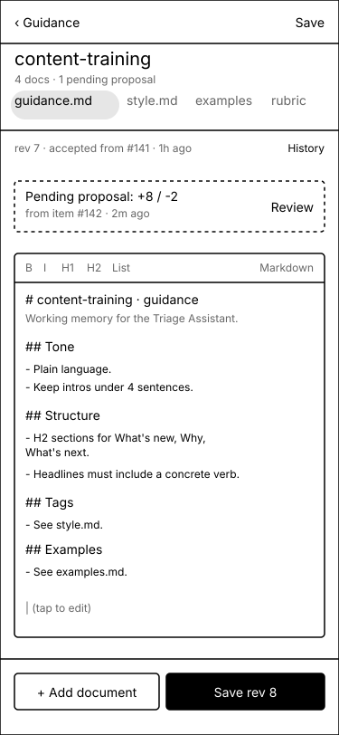
Annotations
- 1 · file tree — Documents listed with revision tag and one-line purpose. Active doc highlighted. "+ new document" is permissive (path-like keys per the plan).
- 2 · editor — Same
MarkdownEditorthe workbench uses. History link opens the revision drawer. - 3 · header — Last update attribution, revision count, save shortcut.
- 4 · revision history strip — Recent revisions inline. Each entry is clickable and notes whether the revision came from an accepted reflection (with item link) or a manual edit.
- Mobile — File list becomes horizontal scroll chips. Pending-proposal banner appears at the top of the active doc. Add-doc + save are sticky at the bottom.
MarkdownEditor, Tabs (mobile chips), Sheet for revision history drawer, Badge for proposal counts.style.md/examples.md/rubric.md on the same screen normalises the practice early so reflection proposals can target the right doc without the user thinking about it.6.Workflow editor
Per the contract, v1 ships a small internal validator — no state-machine library, no drag-and-drop builder. The editor is two tables (states, transitions) plus a read-only graph preview rendered from the records. This keeps invariants honest (terminal states have no outgoing transitions, every transition references real states) without leaking visual-editor complexity.
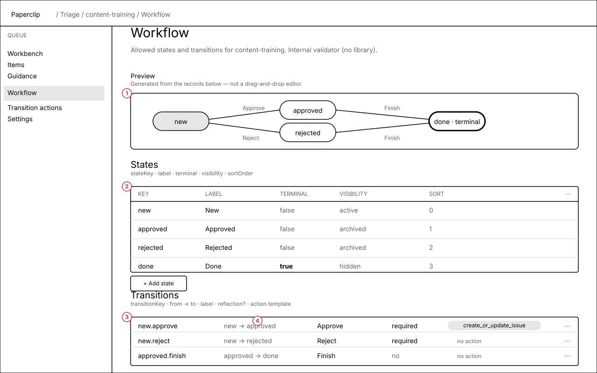
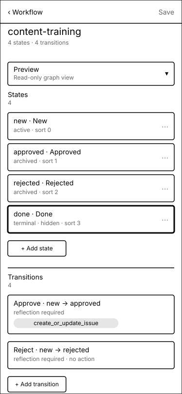
Annotations
- 1 · preview — Auto-generated from the records below. Terminal state has the thicker border (used as a consistent terminal marker across all screens).
- 2 · states table — All fields from the contract:
stateKey, label, terminal, visibility, sort order. - 3 · transitions table — From/to, label, reflection required, attached action template. Inline row actions edit per-row; bulk add via "+ Add transition".
- 4 · action template chip — Tappable pill that opens the transition action editor (next screen) with the right transition pre-selected.
- Mobile — Preview collapses to an accordion. States and transitions become stacked cards. Add buttons sit below the list — no FAB.
Table, Badge, Button, Collapsible for the mobile preview.7.Transition action template
v1's only allowed action: create_or_update_issue. The template is a constrained form — string interpolation only, fields locked to the contract's allowlist (title, description, comment, projectId, goalId, assigneeAgentId/UserId, priority, status). The variable palette + live preview against a real item make the template legible without inviting users to drop in arbitrary expressions.
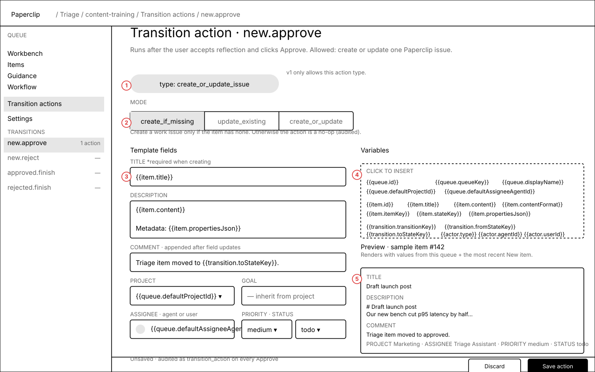
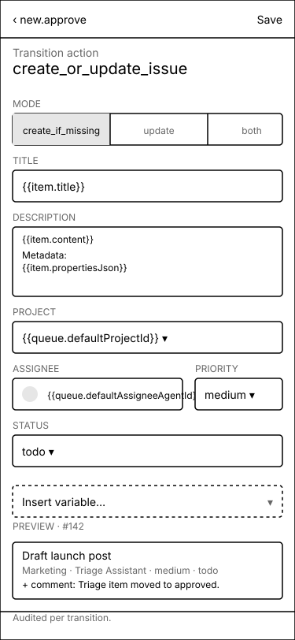
Annotations
- 1 · action type chip — Locked to
create_or_update_issuein v1. Surfaced as a chip so the constraint is visible, not hidden in a disabled dropdown. - 2 · mode segmented control — Three contract-locked modes; the body description below explains the selected mode in plain language.
- 3 · transitions side rail — All transitions for this queue. Each shows whether it has an action so the user can tour them.
- 4 · variable palette — Click-to-insert tokens from the four contract variable roots (
queue.*,item.*,transition.*,actor.*). No JavaScript, no helpers — the palette is the entire surface area. - 5 · live preview — Renders the template against the most recent New item so the user can spot a missing variable or weird formatting before saving. Templating errors fail closed before any side effect runs.
- Status restriction — The status dropdown only contains
backlog/todo/in_review, matching the contract's allowlist. Disabled options aren't shown. - Mobile — Side rail moves into a dropdown above the form. Variable palette becomes a popover triggered by "Insert variable…". Preview lives in a compact card at the bottom.
Input, Textarea, Select, Popover, Tabs, ProjectPicker, AssigneePicker.{{var}} against a context object, flags missing keys). Lives in the plugin; trivial to lift if a second caller appears.8.Queue settings
Per-queue identity, defaults, and lifecycle. queueKey is immutable (it's the ingest API contract). Defaults wire the assistant agent and the project transition actions use. The strict-ingest toggle controls the contract's requireExistingQueue behaviour for this queue. Other concerns (workflow, transition actions, guidance, chat history, danger zone) are tab destinations to keep this screen scannable.
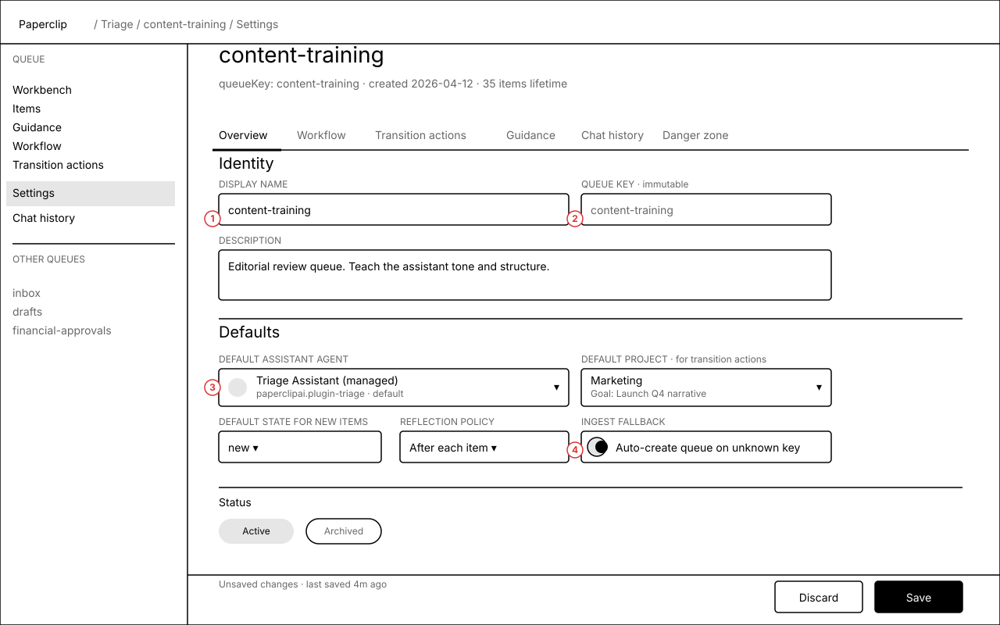
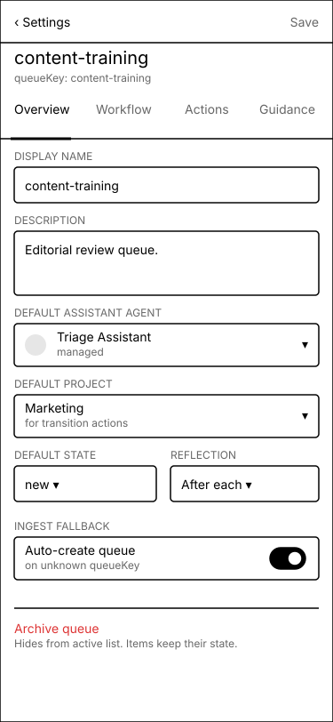
Annotations
- 1 · immutable queueKey — Shown disabled with explicit "immutable" caption. Avoids the trap of breaking the external ingest API contract by renaming.
- 2 · default assistant agent — Picker. Default is the managed
Triage Assistant; teams can swap in a specialised agent per queue (per the plan's "executive assistant learning agent" framing). - 3 · default state — Constrained to the queue's workflow states.
- 4 · ingest fallback toggle — Maps directly to
requireExistingQueuein the ingest API. "Auto-create queue on unknown key" reads better to a human than the API field name. - Sticky save bar — Discard / Save with unsaved-changes indicator. Save bar pattern echoes the rest of the Paperclip UI to feel native, not plugin-y.
- Mobile — Same fields, single column. Tabs scroll horizontally. Danger zone is its own card below the main form.
Tabs, Input, Textarea, Select, Switch, AssigneePicker, ProjectPicker, the standard Paperclip sticky-save-bar pattern.Open questions for CTO/product
- Q1 · Chat history surface — Should the queue's chat history live inside the route sidebar (compact list, click to re-pin items) or inside a dedicated "Chat history" tab on the queue settings? Wireframes lean toward a "Chat history" tab plus a "+ new chat" / "history ▾" pair in the chat column header. Confirm.
- Q2 · Reflection scope — On a transition like
new.approve, the assistant may want to propose changes across multiple guidance docs (e.g.guidance.md+examples.md). The reflection screen supports that today via the file selector. Should we ship that in v1 or restrict v1 to single-doc proposals for simplicity? - Q3 · "Edit before accept" — Goes from the diff view into a full
MarkdownEditorover the proposed body. Open: do we preserve the unaccepted diff badge once edited, or treat the edited version as a fresh manual edit (no longer "from the assistant")? Wireframes currently imply the latter. - Q4 · Mobile two-column posture — Mobile tabs Chat / Document instead of stacking. Stacking would preserve the "see both at once" intent but force scrolling. Confirm tabbing on phones is acceptable given that the desktop two-column is the locked invariant.
- Q5 · Transition action preview "sample item" — Wireframes show the preview pinned to the most recent New item. Alternative: let the user pick which item to preview against. Adds power; complicates first-use. Confirm we ship the default-only version in v1.
- Q6 · Status restriction labelling — The contract bans
in_progress/done/blocked/cancelledas template statuses. Show them disabled (educational) or omit them (cleaner)? Wireframes currently omit.
Questions are also posted as a request_confirmation interaction on PAP-9846 so acceptance can wake the right agent.